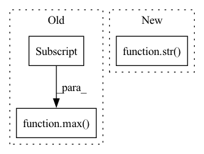

Pattern ID :39382
Before Change
a = nn.Softmax()(outs)
for ii in range(len(outs)):
total += 1
if outs[ii].tolist().index(max(outs[ii] ) ) == y_batch[ii]:
correct += 1
pts.append([a[ii][1], y_batch[ii]])
print((float(correct)/total))After Change
if auprc:
print(AUPRC(pts))
if task == "classification":
print("acc: "+str( accuracy_score(true, pred)) )
return accuracy_score(true, pred)
elif task == "multilabel":
print(" f1_micro: "+str(f1_score(true, pred, average="micro"))+\In pattern: SUPERPATTERN
Frequency: 3
Non-data size: 3
Instances Fragment ID: 111830318
Project Name: pliang279/multibench
Commit Name: 08e57215227c5575c74f7942e287340eb5e50eb7
Time: 2021-06-06
Author: ztwu_nil@zju.edu.cn
File Name: training_structures/MFM.py
M Class Name: AnonimousClass
N Class Name: AnonimousClass
M Method Name: test_MFM(4)
N Method Name: test_MFM(3)
M Parent Class:
N Parent Class:
M File Name: training_structures/MFM.py
N File Name: training_structures/MFM.py
M Start Line: 85
M End Line: 103
N Start Line: 115
N End Line: 144
Before Change
a = nn.Softmax()(outs)
for ii in range(len(outs)):
total += 1
if outs[ii].tolist().index(max(outs[ii] ) ) == y_batch[ii]:
correct += 1
pts.append([a[ii][1], y_batch[ii]])
print((float(correct)/total))After Change
if auprc:
print(AUPRC(pts))
if task == "classification":
print("acc: "+str( accuracy_score(true, pred)) )
return accuracy_score(true, pred)
elif task == "multilabel":
print(" f1_micro: "+str(f1_score(true, pred, average="micro"))+\ Fragment ID: 111830319
Project Name: pliang279/multibench
Commit Name: e8df377596458671f3a074b2f5d41a118b3fe6ae
Time: 2021-06-06
Author: ztwu_nil@zju.edu.cn
File Name: training_structures/MFM.py
M Class Name: AnonimousClass
N Class Name: AnonimousClass
M Method Name: test_MFM(4)
N Method Name: test_MFM(3)
M Parent Class:
N Parent Class:
M File Name: training_structures/MFM.py
N File Name: training_structures/MFM.py
M Start Line: 85
M End Line: 103
N Start Line: 115
N End Line: 144
Before Change
if att < 0:
scaled_att = (-4 / min(self.instance["attributions"])) * att
elif att > 0:
scaled_att = (4 / max(self.instance["attributions"] ) ) * att
else:
scaled_att = att
After Change
ent = {
"start": ii,
"end": ff,
"label": str( rgb.score) ,
}
ents.append(ent)
ii = ff Fragment ID: 111830321
Project Name: dfki-nlp/thermostat
Commit Name: 039dfada1e0a0b420665e7406907088422ee9c78
Time: 2021-06-14
Author: feldhusnlp@gmail.com
File Name: src/thermostat/data/dataset_utils.py
M Class Name: Thermounit
N Class Name: Thermounit
M Method Name: render(1)
N Method Name: render(1)
M Parent Class:
N Parent Class:
M File Name: src/thermostat/data/dataset_utils.py
N File Name: src/thermostat/data/dataset_utils.py
M Start Line: 96
M End Line: 117
N Start Line: 109
N End Line: 123